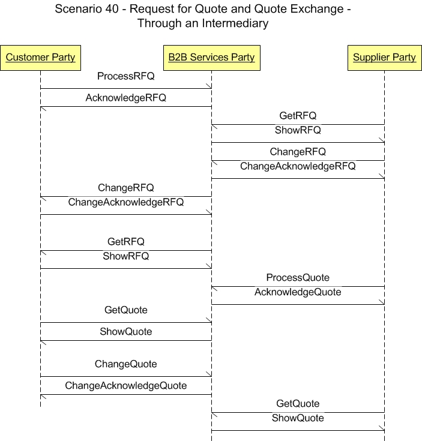
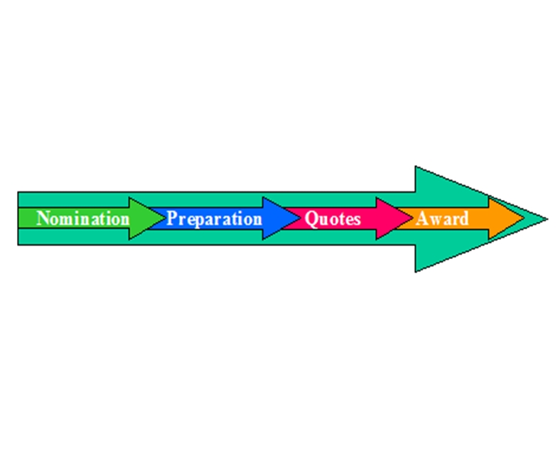

Scenario 40 - Request for Quote and Quote Exchange - Through an Intermediary40.0 OverviewScenario #40 describes the integration of business software components involved with the Request for Quote (RFQ) and Quote processes.The purpose of this scenario is to enable the visualization of the participants in the process and the dialogs between them for this specific integration. This scenario is not meant to be the only model for integrating these applications. This is simply one model that may be used to guide one's own integration efforts. Many applications contribute to the generation of RFQs and the resulting quotes. Some that are involved with the distribution of RFQs and Quotes are:
40.1 Scenario DiagramThe scenario below contains the participants involved in the interaction, the dialog flows or conversation between them, certain assumptions about the sequence of events, and assumptions about the technical approach, for example, publish and subscribe.This is a model to be used as a design recommendation, not a required approach.  40.2 AssumptionsThis scenario assumes a loosely coupled, asynchronous approach with transaction management required but not explicitly defined.This scenario describes a model for one or more purchasing software installations integrating with another purchasing or sales order management software. The environment for this integration may be with a single external organization or several external organizations. There may be instances where all of the data is contained in the documents and other instances where additional binary information accompanies the RequestForQuote and Quote documents. This scenario assumes that the procurement / purchasing component owns the request definition and the instances of data within it. The release may be to a known set of partners, open to response from new partners or issued to an intermediary such an independent trading exchange. This scenario does not cover the activity between the acceptance of a quote and the issuing of a purchase order. Similarly, this scenario does not cover the activity between releasing the quote and generation of the sale order. Both activities are assumed to be supported by normal activity of a vendor application. This scenario does not cover the framework for transmission of binary data documents between software components. This scenario assumes that the details of these transfers are captured in the user definable sections or within vendor specific implementation of OAGIS. 40.3 Component DefinitionsThis Scenario contains two major participants, the purchasing or procurement application of the buyer and the sales order management application of the supplier.The evolution of eCommerce has yielded independent trading exchanges and other intermediaries between buyers and suppliers. Requirements and operations for intermediaries should be similar to direct links between the two components. The definitions and details of these applications are left to the designer but are assumed to contain the functionality as defined by what is commonly sold in the commercial market place today. This definition is broadly accepted by the scenario designers and is a direct result of the decision not to define how the processing takes place within any individual application. Each application must be able perform the services defined by the message BOD (business object document), but the internals of the application are not required or desired to be exposed at this level of standardized abstraction. The most important factors in defining these participants is to ensure that an integration designer can communicate the requirements precisely enough to detail the interfaces needed and their interrelationships. 40.4 Business Workflow (Sequence)The business workflow is graphically represented by starting at the Scenario top and reading from top down and from left to right.The exchange of RequestForQuotes and Quotes may follow several different workflows. The process depends on the type of product or products involved and the entities exchanging the documents. The diagram below illustrates the workflow stages involved with the RequestForQuote / Quote process.  All workflows within the overall scenario have at least two major events in the workflow sequence. The diagram above illustrates the life cycle of the RequestForQuote / Quote process. The Nomination and Preparation phases are sometimes merged into a single event. The Quote and Award phases may be merged as well.
Quantities of Finished Items The workflow sequence for quantities of standard items involves the fewest BODs. The buyer focus involves finding the best price based on large quantities of individual items and/or aggregate items. BODs typically involved include:
Custom, Built-To-Order Items The workflow sequence for custom, built to order involves more activity than that of finished goods. The buyer*s focus involves finding the best price for an item or quantity of items that are not currently available. A long-term business relationship is often involved leading to expectations that must be addressed within the quote. Customized products require a higher level of specification. Individual supplier inquiries may be answered formally for all participants to insure competitive parity. Conversely, buyers may have questions related to an individual quote that lead to a change. BODs typically involved include:
Using Intermediaries To Manage RequestForQuote/Quote Exchange Activity Much of the additional activity follows from the aggregation provided by an intermediary. Multiple RequestForQuotes and quotes could reside with the intermediary. The process for both suppliers and buyers is similar but involves RequestForQuote or quotes respectively. The list below outlines the steps that may be involved.
Additional BODs identified above include:
40.5 Exception HandlingException handling is highly localized as the result of an implementation's infrastructure, management and business rules. As such, this section of the Scenario documentation is planned to be used as a guide to help understand the additional intent of these Scenarios. If no exceptions are noted here, then it can be assumed that the Scenario designers agreed that the Scenario is straight forward and has no additional needs:
Copyright OAGi 2017 - All Rights Reserved -- OAGIS release 10.4 - Document Number: 20170501-40 |